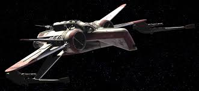
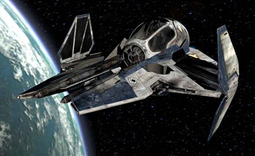
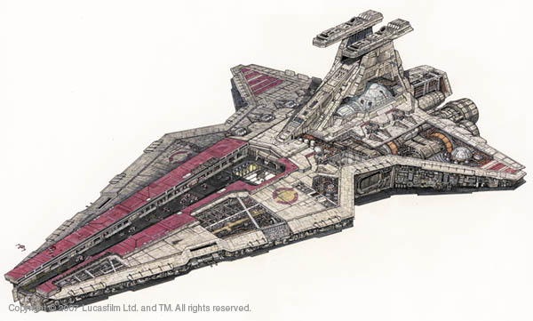
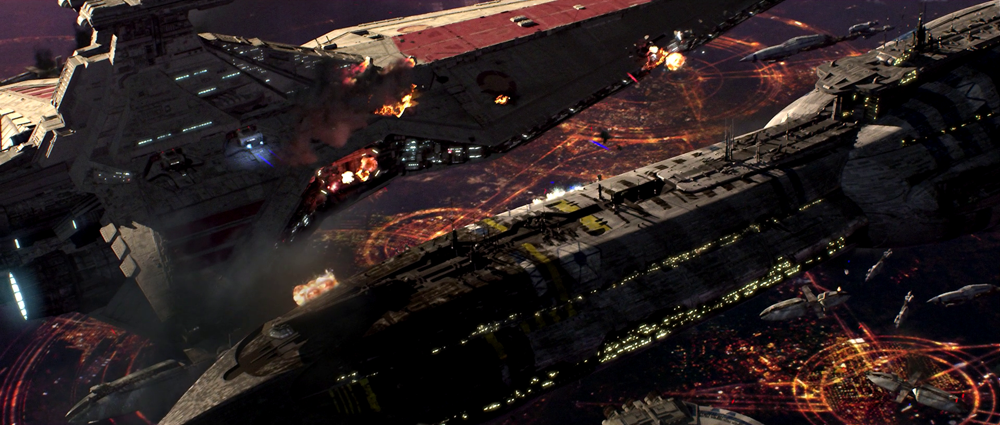
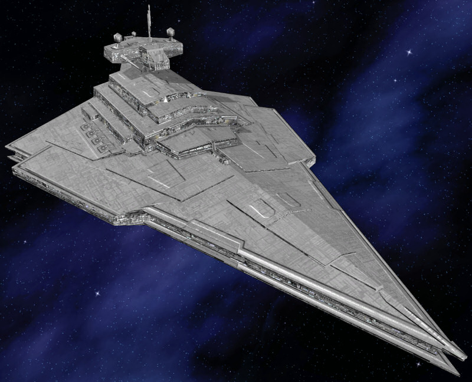

Характеристика
«Венатор» был разработан и сконструирован «Верфями Куата». Типовая модель имела 1 137 метров в длину, что делало её одним из крупнейших кораблей, приспособленных к атмосферным операциям — посадке на планеты для выгрузки или взятия на борт войск и транспортных средств.

Вооружение
Вооружение звёздного разрушителя типа «Венатор» состояло из 8 тяжёлых сдвоенных турболазерных установок, 2 средних сдвоенных турболазерных пушек, 26 сдвоенных оборонительных лазерных пушек и 4 тяжёлых торпедных аппаратов для протонных торпед.
Восемь тяжёлых сдвоенных турболазерных установок DBY-827 являлись основным оружием «Венатора». Они имели два режима наведения. При установленном режиме дальнего наведения DBY-827 мог сбивать неприятельские суда в пределах до 10 световых минут. В ближнем бою установка могла совершить полный оборот за 3 секунды – в режиме быстрого наведения.
DBY-827 имел семь уровней мощности. Это позволяло пилотам и канонирам «Венатора» выбирать уровень мощности выстрела – от небольшого залпа до распыляющего взрыва. Как любой боевой корабль, звёздный разрушитель «Венатор» мог, когда это было необходимо, направить почти всю мощность своего реактора на тяжёлые турболазеры.
Комплектующие
Несмотря на то, что он обладал мощным вооружением и находился на одном уровне с более поздним звёздным разрушителем типа «Победа I», «Венатор» разрабатывался в основном как носитель истребителей. Его ангарные отсеки были намного больше, чем у поздних звёздных разрушителей типа «Победа I», и более поздних, типа «Имперский I».
До образования Галактической Империи типичный республиканский «Венатор» носил 420 истребителей: 192 V-крыла или V-19 типа «торрент», 192 перехватчика Эта-2 типа «актис» и 36 истребителей АИР-170. Также в корабельных ангарах обычно стояли различные челноки.
Вдобавок к стандартным внутренним ангарным отсекам, нос «Венатора» мог раскрываться, давая доступ к верхней лётной палубе длиной в полкилометра. Эта лётная палуба давала «Венатору» возможность быстро выпустить сотни истребителей. Тем не менее, медленно открывавшиеся бронированные носовые створки делали корабль чрезвычайно уязвимым.
Чтобы скомпенсировать это слабое место, использовались мощные щиты, однако данный недостаток конструкции был полностью устранён лишь в последующих моделях звёздных разрушителей, таких как ЗР типа «Имперский I». В конструкцию были включены турболазеры СТАУ для защиты корабля в то время, когда открывались длинные створки.
«Венатор» также имел ангарные выходы по правому и левому борту. Они использовались для перемещения людей и грузов при стыковке с космическими станциями, швартовочными башнями и более крупными кораблями. В соответствии со своим предназначением – носитель истребителей – «Венатор» отличался оригинальным двойным башенным мостиком. Левая башня – командный мостик истребителей, правая служила обычным рулевым и командным мостиком. В будущих разработках также применялся такой двойной мостик.
«Венатор» также мог служить военным транспортом; он был способен входить в атмосферу планет и садиться на поверхность. В стандартной комплектации доимперские звёздные разрушители типа «Венатор» несли 40 канонерок LAAT/i и 24 шагохода АТ-ТЕ для наземных операций.
История
Звёздные разрушители типа «Венатор» участвовали во многих сражениях, начиная с середины Войн клонов. Во время второй битвы при Корусанте свыше тысячи кораблей помогали оборонять столицу и сыграли решающую роль в операции, целью которой было отогнать силы КНС и спасти Верховного канцлера Палпатина. Эти боевые корабли использовались в качестве сопровождения для республиканских линкоров; они были достаточно быстрыми, чтобы преследовать вражеские корабли, и достаточно крупными, чтобы возглавлять самостоятельные операции, такие как битва за Кашиик и битва за Утапау.
В конце Войн клонов они сопровождали десантные корабли типа «Аккламатор I» и звёздные разрушители типа «Победа I», ставшие основными военными кораблями Республики, хотя вскоре после установления Нового порядка их заслонили разработки, ставшие позже звёздным разрушителем типа «Победа II».